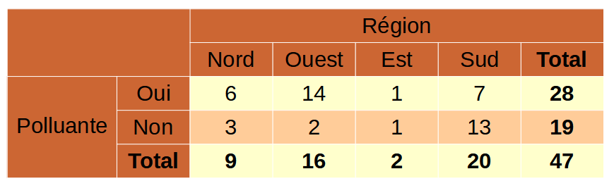
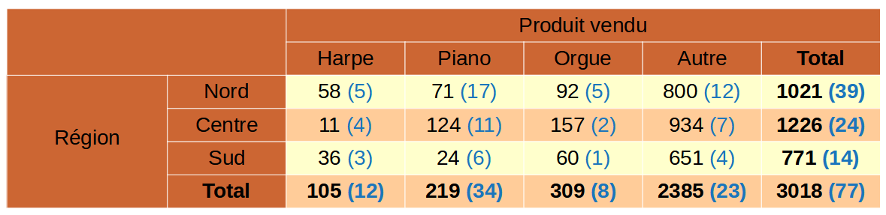
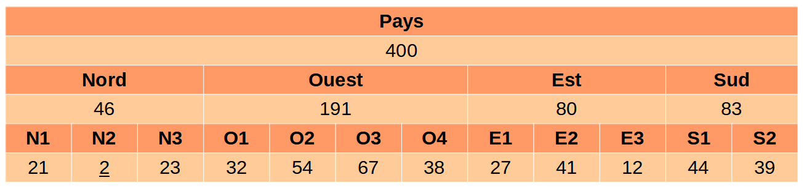
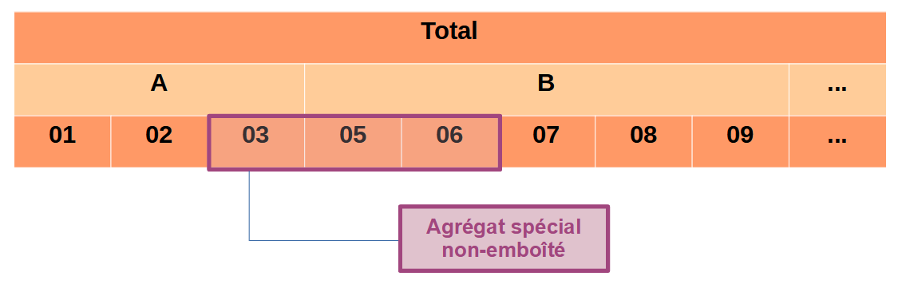
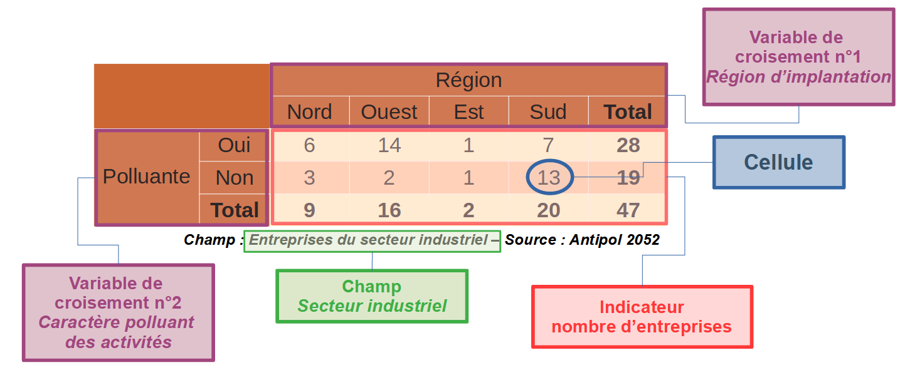
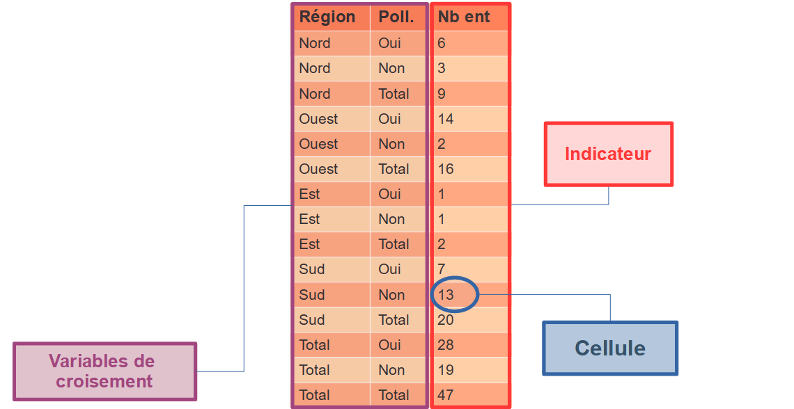
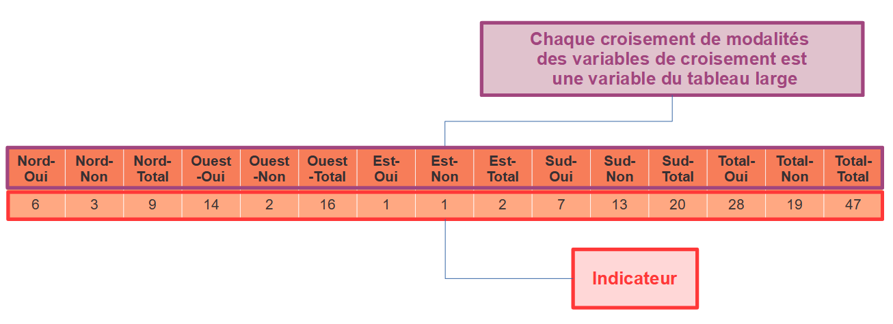

flowchart TD A[Pays] --> B[Nord] A[Pays] --> C[Ouest] A[Pays] --> D[Est] A[Pays] --> E[Sud] B --> F[N1] B --> G[N2] B --> H[N3] C --> I[O1] C --> J[O2] C --> K[O3] C --> L[04] D --> M[E1] D --> N[E2] D --> O[E3] E --> P[S1] E --> Q[S2]
2 Notions principales à connaître
2.2 Tableaux d’effectifs et tableaux de magnitude
On distingue deux types de tableaux : les tableaux d’effectifs et ceux de magnitude.
Un tableau d’effectifs est un tableau dans lequel la valeur d’une cellule correspond au nombre d’unités qui partagent les caractéristiques de la cellule.
Voici un exemple de tableau d’effectifs :

Un tableau de magnitude (ou de volume) est un tableau dans lequel la valeur de chaque cellule représente la somme des contributions des répondants qui partagent les caractéristiques de cette cellule.
Voici un exemple de tableau de magnitude :

2.3 Secret primaire et secret secondaire
Le secret primaire renvoie aux cellules qui doivent être secretisées dès le départ du processus de secrétisation car elles sont considérées comme sensibles. Selon le type de données les cellules considérées comme sensibles varient. Par exemple, pour les statistiques d’entreprises les cellules sont catégorisées comme sensibles du fait de la règle de fréquence (moins de 3 unités dans une cellule) ou de la règle de dominance (un répondant représente plus de 85% du total de la cellule). On ne peut pas diffuser les cellules qui constituent le secret primaire.
Une solution pour ne pas diffuser ces cellules est de les supprimer (cacher). Cependant, uniquement supprimer les cellules touchées par le secret primaire n’est généralement pas suffisant. En effet, si les marges du tableau sont diffusées, alors les cellules sont liées entre elles par des équations. Ainsi, il faut cacher d’autres cellules pour ne pas pouvoir déduire la valeur des cellules cachées : c’est le secret secondaire.
2.4 Variable hiérarchique
Une variable hiérarchique est une variable de ventilation comprenant plusieurs sous-totaux. Autrement dit, certaines modalités de cette variables se somment en une autre modalité de la variable.
Par exemple, on pourrait imaginer une variable hiérarchique géographique comme dans le tableau suivant :

On peut aussi la représenter sous forme d’arbre :
2.5 Hiérarchies non-emboîtées
Une hiérarchie non-emboîtée est le cas où dans un tableau diffusé, l’emboîtement des modalités d’une variable hiérarchique n’est pas parfait.
Par exemple si on utilise une variable de la NAF A88 comme suit et que l’on veut aussi diffuser un sous-total regroupant les codes division 03, 05 et 06 alors on a une hiérarchie non-emboîtée.

2.6 Liaisons entre tableaux
On dit que des tableaux sont liés lorsqu’ils possèdent la même variable ventilée et partagent une ou plusieurs variables de ventilation. Ces liens entre tableaux doivent être pris en compte pour traiter correctement le secret. Sinon, les cellules cachées peuvent se déduire les unes des autres.
Les liens les plus courants sont :
- Les tableaux partageant des marges communes (i.e. partageant le même champ, la même variable de réponse, une ou plusieurs variables de croisement);
- Les tableaux additifs ou corrélés (i.e. partageant le même champ, les mêmes variables de croisements, les variables de réponse différentes mais liées entre elles - équation ou corrélation);
- Les hiérarchies non-emboîtées ;
- Les différences de millésime.
En effet, pour des données périodiques, la temporalité peut être perçue comme un ensemble de tableaux liés : il vaut mieux que le masque de secret change peu entre chaque millésime.
Par exemple si l’on souhaite diffuser le nombre d’entreprises en France selon :
T0_1: le sexe de son/sa dirigeant(e) et la région d’implantationT0_2: le sexe de son/sa dirigeant(e) et la caractère polluant ou non de l’activité d’entrepriseT0_3: le caractère polluant ou non de l’activité de l’entreprise et la région d’implantation
Nombre d’entreprises par région et par sexe du dirigeant (T0_1)
| Femme | Homme | Total | |
|---|---|---|---|
| Nord | 16 | 20 | 36 |
| Sud | 19 | 12 | 31 |
| Total | 35 | 32 | 67 |
Nombre d’entreprises polluantes par sexe du dirigeant (T0_2)
| Polluante | Non polluante | Total | |
|---|---|---|---|
| Femme | 8 | 27 | 35 |
| Homme | 22 | 17 | 32 |
| Total | 30 | 37 | 67 |
Nombre d’entreprises polluantes par région (T0_3)
| Polluante | Non polluante | Total | |
|---|---|---|---|
| Nord | 10 | 26 | 36 |
| Sud | 20 | 11 | 31 |
| Total | 30 | 37 | 67 |
Ces trois tableaux sont liés puisqu’ils partagent des marges communes :
T0_1etT0_2ont les mêmes marges sur la variableSEXET0_1etT0_3ont les mêmes marges sur la variableREGIONT0_2etT0_3ont les mêmes marges sur la variablePOLL
2.7 Tableau à diffuser vs à protéger
Les tableaux qui seront finalement diffusés ne sont pas les mêmes que les tableaux à protéger. En effet, les tableaux à protéger sont le résultat de l’analyse de la demande. Cette analyse consiste à identifier les tableaux liés entre eux et les hiérarchies (emboîtées ou non). Dès lors, l’identification de ces liens va nous pousser à regrouper différents tableaux ou au contraire les séparer. Une fois l’analyse terminée on se retrouve avec les tableaux à protéger, le secret sera appliqué sur ces tableaux et c’est seulement une fois la procédure terminée que l’on pourra reporter le secret identifié sur les tableaux à protéger sur les tableaux à diffuser. Cette phase d’analyse est développé dans la Partie 3
2.1 Comment décrire un tableau ?
Un tableau présente le résultat de l’agrégation d’un indicateur connu au niveau individuel, ventilé selon une ou plusieurs catégories de ces individus.
On appellera :

Exemples de tableaux :
On veut diffuser la moyenne d’âge des chefs d’entreprises par secteur d’activité :
variable de croisement : secteur d’activité (ACT)
indicateur : âge moyen (x_age)
champ : toutes entreprises confondues
On souhaite diffuser la note moyenne au brevet des élèves entrant en seconde selon la région, le secteur de l’établissement (public, privé), et la catégorie socio-professionnelle des parents :
variable de croisement : région (REG), secteur (SEC)
indicateur : note moyenne (x_note)
champ : élèves de seconde de l’année N
Il existe 3 formats de tableaux :


En général, un utilisateur final pense à un tableau croisé. Mais pour la pose du secret, on travaillera exclusivement avec la forme longue des tableaux. Un tableau long est donc composé de deux types de variables :
Les variables de croisements (catégorielles) qui servent à décrire le contexte d’une cellule ;
La variable réponse (ou indicateur) qui indique la valeur d’une cellule.